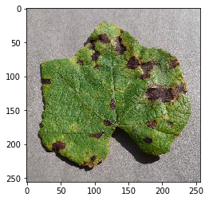
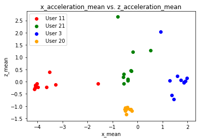
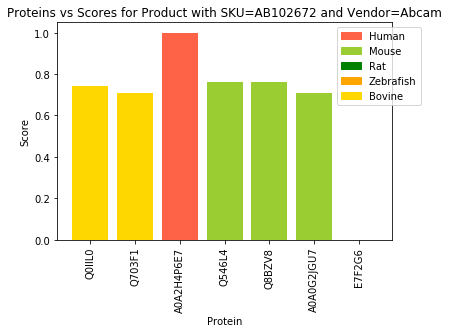

Image Classification
Deep Learning-based Plant Disease Identification

Time Series Analysis
User Identification from Walking Activity

Bioinformatic Analysis
Finding the Cross Reactivity of Antibodies